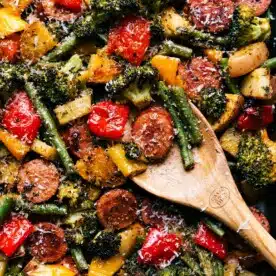

Sheet Pan Sausage And Veggies

Sheet Pan Sausage and Veggies makes for the best simple, filling, and nutritious dinner with virtually no cleanup!
A killer seasoning blend gets tossed with your favorite veggies and smoked sausage and roasted to perfection.
Ingredients
- 2 cups diced baby red potatoes
- 3 cups trimmed and halved green beans
- 1 large head of broccoli
- 1 1/2 cups chopped bell peppers
- 13 ounces smoked sausage
- 6 tablespoons olive oil
- 1/4 teaspoon red pepper flakes
- 1 teaspoon paprika
- 1/2 teaspoon garlic powder
- 1 tablespoon EACH: dried oregano, dried parsley
- Salt & pepper
- Serve with: fresh parsley, quinoa/rice, lots of freshly grated parmesan cheese
Directions
- PREP: Preheat the over to 400 degrees F. Line a very large sheet pan
or 2 smaller pans with parchment paper and set aside.
- PREP VEGGIES: It is important to prep the veggies to ensure they all cook
at the same rate. Wash and chop the unpeeled baby potatoes. You want the pieced
quite small. I halve the baby potatoes and then dice each half. This yields a total of 10-12
pieces per potato. Trim the green beans and then cut in half, chop the broccoli into florets,
chop the peppers into 1-inch pieces, and the sausage in thick (1/2-inch) slices.
- OLIVE OIL AND SEASONINGS: Place all the veggies and sausages on the prepared sheet pan.
Pour the olive oil and all the seasonings on top. Season to taste with salt and pepper (I add
1/2 teaspoon of salt and 1/4 teaspoon pepper to start with). Use your hands to toss and evenly
coat all the veggies and sausage with seasonings. Space everythojng out so it has plenty of
space to cook. If veggies are crammed/overlapping they'll steam instead of roast and will
take longer to cook.
- BAKE: Bake 15 minutes, remove from the oven and flip/stir all the veggies aroung. Return to
the oven and bake for another 10-15 minutes or until veggies are crisp-tender.